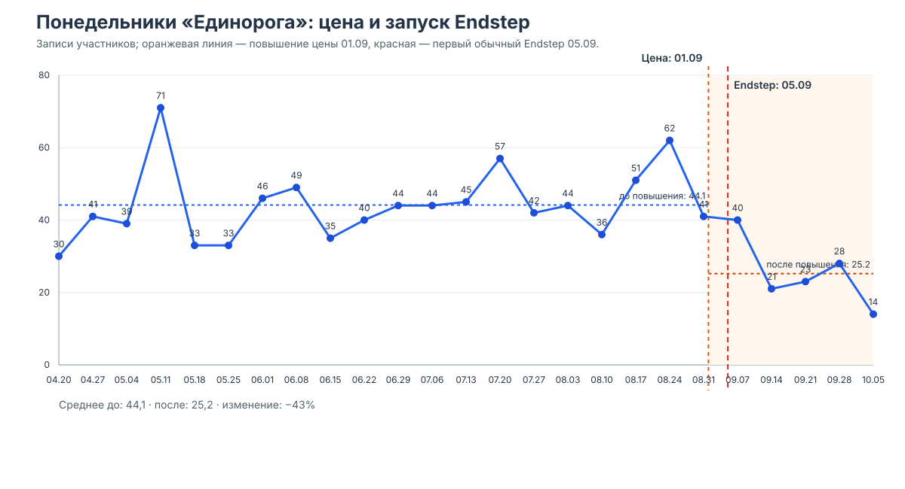
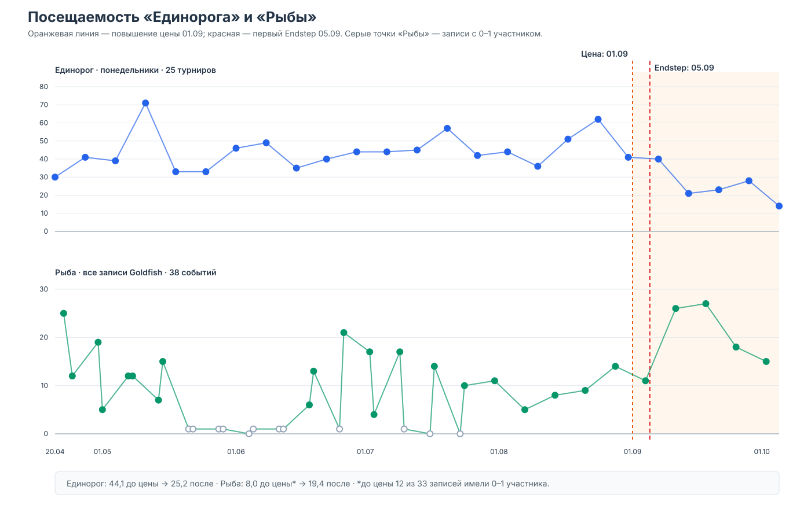
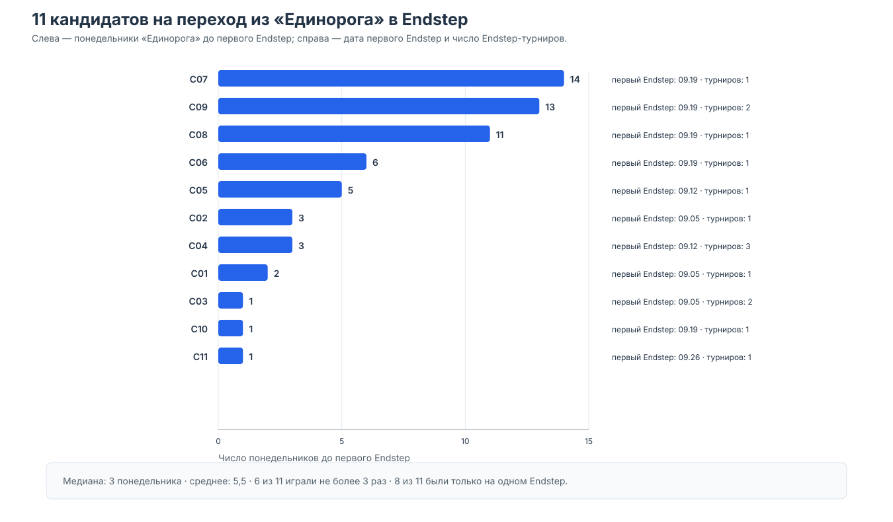
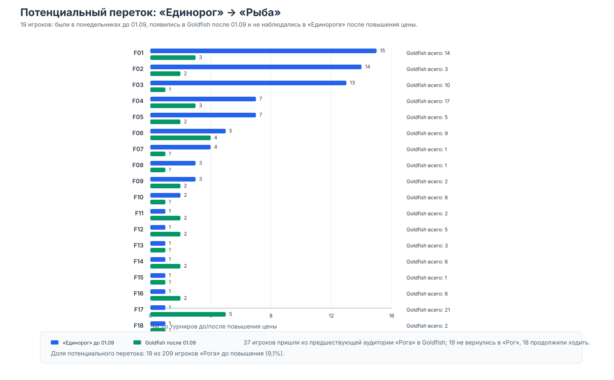

Понедельники в «Роге», Endstep и Goldfish
Срез: 20.04–05.10.2026
События: повышение цены 01.09 · первый Endstep 05.09
Главный вывод: массового ухода в Endstep не видно. Есть небольшой, но заметный потенциальный переток из «Рога» в «Рыбу».
user_id.Исторические данные отражают регистрацию/участие в базе, а не всегда подтверждённый факт фактической игры.

31.08 — последний понедельник до повышения.
07.09 — первый после него.
Немедленного обвала нет.
Цена и Endstep разделены четырьмя днями.
Возможен отложенный эффект цены, но причинно разделить цену и Endstep по этому окну нельзя.


медиана понедельников в «Роге» до первого Endstep
были только на одном Endstep
Это кандидаты для проверки, а не доказанные мигранты.

потенциальных случаев после 01.09
37 игроков из прежней аудитории «Рога» появились в Goldfish.
18 продолжили ходить в оба клуба;
19 больше не наблюдались в «Роге».
Переток небольшой и сконцентрирован в нескольких игроках.
Следующий шаг: ещё 2–3 месяца наблюдений, фактическая посещаемость вместо регистрации и единая недельная панель по клубам.